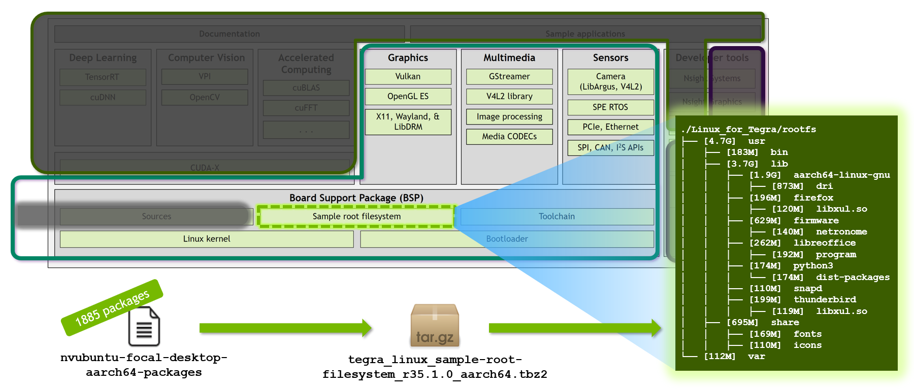
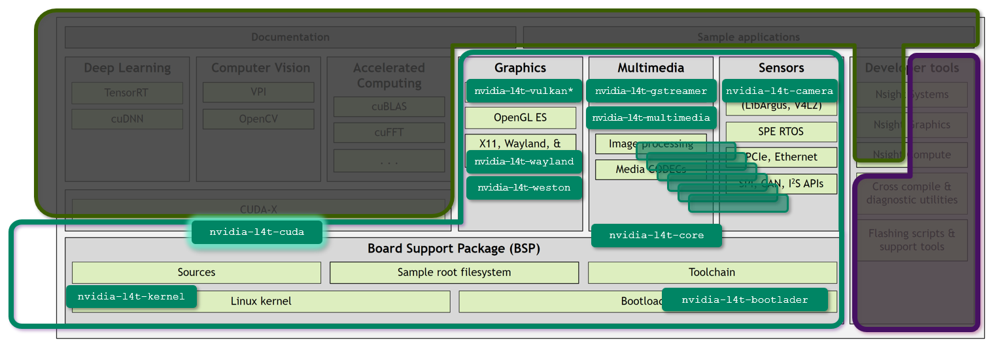

"Minimized L4T" configuration for JetPack 5.x
You can create a minimized configuration of L4T by reducing the standard Debian packages that composes the base RootFS image or/and by reducing the nvidia-l4t specific packages installed on top of the RootFS image to foam L4T.
You may need to installed some of the removed nvidia-l4t packages on the container side.
Disk space used for JetPack Runtime configuration
| JetPack 5.0.2 (Rel 35.1.0) Jetson AGX Orin Developer Kit |
JetPack 5.0.2 (Rel 35.1.0) Jetson AGX Xavier Developer Kit |
JetPack 5.0.2 (Rel 35.1.0) Jetson Xavier NX Developer Kit |
|
|---|---|---|---|
| Base L4T | 5.6 GB | nnn GB | 5.6 GB |
| minplus flavor L4T | 2.7 GB | nnn GB | 2.6 GB |
| bone300 flavor L4T | 682 MB | nnn GB | 670 GB |
L4T composition
Standard Debian packages for RootFS image

Link to the RootFS flavor definition
nvidia-l4t specific packages

Full list of nvidia-l4t packages
160854 KiB nvidia-l4t-3d-core NVIDIA GL EGL Package
31 KiB nvidia-l4t-apt-source NVIDIA L4T apt source list debian package
198666 KiB nvidia-l4t-bootloader NVIDIA Bootloader Package
20839 KiB nvidia-l4t-camera NVIDIA Camera Package
1504 KiB nvidia-l4t-configs NVIDIA configs debian package
10422 KiB nvidia-l4t-core NVIDIA Core Package
22790 KiB nvidia-l4t-cuda NVIDIA CUDA Package
4094 KiB nvidia-l4t-display-kernel NVIDIA Display Kernel Modules Package
16487 KiB nvidia-l4t-firmware NVIDIA Firmware Package
77 KiB nvidia-l4t-gbm NVIDIA GBM Package
38 KiB nvidia-l4t-gputools NVIDIA dgpu helper Package
69598 KiB nvidia-l4t-graphics-demos NVIDIA graphics demo applications
5131 KiB nvidia-l4t-gstreamer NVIDIA GST Application files
16737 KiB nvidia-l4t-init NVIDIA Init debian package
16421 KiB nvidia-l4t-initrd NVIDIA initrd debian package
134 KiB nvidia-l4t-jetson-io NVIDIA Jetson.IO debian package
159 KiB nvidia-l4t-jetsonpower-gui-too NVIDIA Jetson Power GUI Tools debian package
237542 KiB nvidia-l4t-kernel NVIDIA Kernel Package
4772 KiB nvidia-l4t-kernel-dtbs NVIDIA Kernel DTB Package
70953 KiB nvidia-l4t-kernel-headers NVIDIA Linux Tegra Kernel Headers Package
596 KiB nvidia-l4t-libvulkan NVIDIA Vulkan Loader Package
31183 KiB nvidia-l4t-multimedia NVIDIA Multimedia Package
742 KiB nvidia-l4t-multimedia-utils NVIDIA Multimedia Package
65 KiB nvidia-l4t-nvfancontrol NVIDIA Nvfancontrol debian package
205 KiB nvidia-l4t-nvpmodel NVIDIA Nvpmodel debian package
86 KiB nvidia-l4t-nvpmodel-gui-tools NVIDIA Nvpmodel GUI Tools debian package
999 KiB nvidia-l4t-nvsci NVIDIA NvSci Package
110 KiB nvidia-l4t-oem-config NVIDIA OEM-Config Package
235 KiB nvidia-l4t-openwfd NVIDIA OpenWFD Package
8212 KiB nvidia-l4t-optee OP-TEE userspace daemons, test programs and libraries
85 KiB nvidia-l4t-pva NVIDIA PVA Package
3336 KiB nvidia-l4t-tools NVIDIA Public Test Tools Package
6922 KiB nvidia-l4t-vulkan-sc NVIDIA Vulkan SC run-time package
19617 KiB nvidia-l4t-vulkan-sc-dev NVIDIA Vulkan SC Dev package
14000 KiB nvidia-l4t-vulkan-sc-samples NVIDIA Vulkan SC samples package
83151 KiB nvidia-l4t-vulkan-sc-sdk NVIDIA Vulkan SC SDK package
77 KiB nvidia-l4t-wayland NVIDIA Wayland Package
4749 KiB nvidia-l4t-weston NVIDIA Weston Package
226 KiB nvidia-l4t-x11 NVIDIA X11 Package
602 KiB nvidia-l4t-xusb-firmware NVIDIA USB Firmware Package
52 KiB jetson-gpio-common Jetson GPIO library package (common files)
105 KiB python-jetson-gpio Jetson GPIO library package (Python 2)
105 KiB python3-jetson-gpio Jetson GPIO library package (Python 3)
Link to the L4T Package Lists
Instruction
Below, we show how you set up the Linux_for_Tegra directory for Jetson AGX Orin based on r35.1.0 with:
- 300 Debian packages for BSP rootfs (
nvubuntu-focal-bone300-aarch64-packages) - kernel + 8 packages for
nvidia-l4tpackages (l4t_k8.list)
Step 1. Prepare a minimized flavor L4T
Use a L4T utility script to prepare the customized Linux_for_Tegra directory.
You can use prepare_l4t_dir.sh script to automate the preparation of Linux_for_Tegra directory.
BOARD=jetson-agx-orin-devkit
cd
git clone https://github.com/NVIDIA-AI-IOT/jetson-min-disk
cd jetson-min-disk
./scripts/prepare_l4t_dir.sh -b ${BOARD} -v r35.1.0 --flavor bone300 --l4tpkg k8
cd $(cat LAST_L4T_DIR)
sudo ./flash.sh ${BOARD} mmcblk0p1
Step 2. Install nvidia-container
After flashing is done, boot your Jetson, and execute the following.
sudo apt update
sudo apt install nvidia-container
sudo systemctl restart docker
sudo usermod -aG docker $USER
newgrp docker
Step 3. Setting up directories for containers
We will set up some directories to be mounted by containers.
USER=username
HOST_IP=192.168.1.101
SCRIPT_DIR=/home/${USERNAME}/jetson-min-disk/scripts/
mkdir /tmp/l4t-packages
scp ${USER}@${HOST_IP}:${SCRIPT_DIR}/mod_deb/nvidia-l4t-core_35.1.0-20220825113828nolib_arm64.deb /tmp/l4t-packages/
scp ${USER}@${HOST_IP}:${SCRIPT_DIR}/mod_deb/nvidia-l4t-cuda_35.1.0-20220825113828nolib_arm64.deb /tmp/l4t-packages/
In the l4t-packages directory, we prepare additional/customized Debian packages to be installed inside the containers.
How to customize the Debian package: Creation of empty package
fakeroot sh -c '
mkdir tmp
dpkg-deb -R nvidia-l4t-cuda_35.1.0-20220825113828_arm64.deb tmp
rm -rf ./tmp/usr
dpkg-deb -b tmp nvidia-l4t-cuda_35.1.0-20220825113828nolib_arm64.deb
rm -rf ./tmp
'
Step 4. Running a container
mkdir _output
sudo docker run -it --rm --net=host --runtime nvidia -w /opt/nvidia/deepstream/deepstream \
-v ${PWD}/_output:/opt/nvidia/deepstream/deepstream/_output \
-v /tmp/l4t-packages:/l4t-packages \
nvcr.io/nvidia/deepstream-l4t:6.1.1-samples
git clone https://github.com/NVIDIA-AI-IOT/jetnet
cd jetnet
sudo docker run \
--network host \
--gpus all \
--runtime nvidia
-it \
--rm \
--name=jetnet \
-v $(pwd):/jetnet \
--device /dev/video0 \
-v /tmp/.X11-unix:/tmp/.X11-unix \
-e DISPLAY=$DISPLAY \
-v /tmp/l4t-packages:/l4t-packages \
jaybdub/jetnet:l4t-35.1.0 \
/bin/bash -c "cd /jetnet && python3 setup.py develop && /bin/bash"
Step 5. Install additional packages inside the container
Install nvidia-l4t packages inside the container.
(Remember, many nvidia-l4t packages were removed from the base L4T, so the end application in the container may not find necessary libraries on the host.)
Depending on the applications and its functionality, the required nvidia-l4t package vary.
It takes some trials to identify packages necessary to ensure the application's execution.
Note some nvidia-l4t packages don't like its dependent packages (like nvidia-l4t-core and nvidia-l4t-cuda) installed on the host side.
The method demonstrated below makes the package manager think those packages are installed, although it does not actually install any files in the container.
mkdir -p /opt/nvidia/l4t-packages/
touch /opt/nvidia/l4t-packages/.nv-l4t-disable-boot-fw-update-in-preinstall
dpkg -i /l4t-packages/nvidia-l4t-core_35.1.0-20220825113828nolib_arm64.deb
dpkg -i /l4t-packages/nvidia-l4t-cuda_35.1.0-20220825113828nolib_arm64.deb
bash -c 'echo "deb https://repo.download.nvidia.com/jetson/t234 r35.1 main" >> /etc/apt/sources.list'
apt-get update
apt-get install nvidia-l4t-multimedia
apt-get install nvidia-l4t-gstreamer
apt-get install nvidia-l4t-3d-core
ldconfig
mkdir -p /opt/nvidia/l4t-packages/
touch /opt/nvidia/l4t-packages/.nv-l4t-disable-boot-fw-update-in-preinstall
dpkg -i /l4t-packages/nvidia-l4t-core_35.1.0-20220825113828nolib_arm64.deb
dpkg -i /l4t-packages/nvidia-l4t-cuda_35.1.0-20220825113828nolib_arm64.deb
bash -c 'echo "deb https://repo.download.nvidia.com/jetson/t234 r35.1 main" >> /etc/apt/sources.list'
apt-get update
apt-get install nvidia-l4t-multimedia
apt-get install nvidia-l4t-3d-core
ldconfig
Step 6. Run the DeepStream sample app
Run the following inside the container.
deepstream-app -c samples/configs/deepstream-app/source2_1080p_dec_infer-resnet_demux_int8.txt
jetnet demo jetnet.mmdet.MASK_RCNN_R50_FPN_1X_COCO_TRT_FP16
Log of the container
root@jao-JP502-bone300-k8:/opt/nvidia/deepstream/deepstream-6.1# mkdir -p /opt/nvidia/l4t-packages/
root@jao-JP502-bone300-k8:/opt/nvidia/deepstream/deepstream-6.1# touch /opt/nvidia/l4t-packages/.nv-l4t-disable-boot-fw-update-in-preinstall
root@jao-JP502-bone300-k8:/opt/nvidia/deepstream/deepstream-6.1# dpkg -i /l4t-packages/nvidia-l4t-core_35.1.0-20220825113828nolib_arm64.deb
Selecting previously unselected package nvidia-l4t-core.
(Reading database ... 41602 files and directories currently installed.)
Preparing to unpack .../nvidia-l4t-core_35.1.0-20220825113828nolib_arm64.deb ...
Pre-installing... skip compatibility checking.
Unpacking nvidia-l4t-core (35.1.0-20220825113828) ...
Setting up nvidia-l4t-core (35.1.0-20220825113828) ...
Configuration file '/etc/ld.so.conf.d/nvidia-tegra.conf'
==> File on system created by you or by a script.
==> File also in package provided by package maintainer.
What would you like to do about it ? Your options are:
Y or I : install the package maintainer's version
N or O : keep your currently-installed version
D : show the differences between the versions
Z : start a shell to examine the situation
The default action is to keep your current version.
*** nvidia-tegra.conf (Y/I/N/O/D/Z) [default=N] ? N
root@jao-JP502-bone300-k8:/opt/nvidia/deepstream/deepstream-6.1# dpkg -i /l4t-packages/nvidia-l4t-cuda_35.1.0-20220825113828nolib_arm64.deb
Selecting previously unselected package nvidia-l4t-cuda.
(Reading database ... 41613 files and directories currently installed.)
Preparing to unpack .../nvidia-l4t-cuda_35.1.0-20220825113828nolib_arm64.deb ...
Unpacking nvidia-l4t-cuda (35.1.0-20220825113828) ...
Setting up nvidia-l4t-cuda (35.1.0-20220825113828) ...
root@jao-JP502-bone300-k8:/opt/nvidia/deepstream/deepstream-6.1# bash -c 'echo "deb https://repo.download.nvidia.com/jetson/t234 r35.1 main" >> /etc/apt/sources.list'
root@jao-JP502-bone300-k8:/opt/nvidia/deepstream/deepstream-6.1# apt-get update
Get:1 https://repo.download.nvidia.com/jetson/common r35.1 InRelease [2555 B]
Get:2 https://repo.download.nvidia.com/jetson/t234 r35.1 InRelease [2550 B]
Get:3 https://repo.download.nvidia.com/jetson/common r35.1/main arm64 Packages [19.1 kB]
Hit:4 http://ports.ubuntu.com/ubuntu-ports focal InRelease
Get:5 http://ports.ubuntu.com/ubuntu-ports focal-updates InRelease [114 kB]
Get:6 https://repo.download.nvidia.com/jetson/t234 r35.1/main arm64 Packages [10.3 kB]
Get:7 http://ports.ubuntu.com/ubuntu-ports focal-backports InRelease [108 kB]
Get:8 http://ports.ubuntu.com/ubuntu-ports focal-security InRelease [114 kB]
Get:9 http://ports.ubuntu.com/ubuntu-ports focal-updates/universe arm64 Packages [1143 kB]
Get:10 http://ports.ubuntu.com/ubuntu-ports focal-updates/restricted arm64 Packages [4576 B]
Get:11 http://ports.ubuntu.com/ubuntu-ports focal-updates/main arm64 Packages [1961 kB]
Get:12 http://ports.ubuntu.com/ubuntu-ports focal-updates/multiverse arm64 Packages [9303 B]
Get:13 http://ports.ubuntu.com/ubuntu-ports focal-backports/main arm64 Packages [54.8 kB]
Get:14 http://ports.ubuntu.com/ubuntu-ports focal-backports/universe arm64 Packages [27.5 kB]
Get:15 http://ports.ubuntu.com/ubuntu-ports focal-security/restricted arm64 Packages [4331 B]
Get:16 http://ports.ubuntu.com/ubuntu-ports focal-security/universe arm64 Packages [845 kB]
Get:17 http://ports.ubuntu.com/ubuntu-ports focal-security/main arm64 Packages [1570 kB]
Fetched 5990 kB in 2s (2519 kB/s)
Reading package lists... Done
root@jao-JP502-bone300-k8:/opt/nvidia/deepstream/deepstream-6.1# apt-get install nvidia-l4t-multimedia
Reading package lists... Done
Building dependency tree
Reading state information... Done
The following packages were automatically installed and are no longer required:
libavfilter7 libavformat58 libbluray2 libmysofa1 libpostproc55 librubberband2 libssh-gcrypt-4 libswscale5 libvidstab1.1
Use 'apt autoremove' to remove them.
The following additional packages will be installed:
nvidia-l4t-multimedia-utils nvidia-l4t-nvsci
The following NEW packages will be installed:
nvidia-l4t-multimedia nvidia-l4t-multimedia-utils nvidia-l4t-nvsci
0 upgraded, 3 newly installed, 0 to remove and 67 not upgraded.
Need to get 8479 kB of archives.
After this operation, 33.7 MB of additional disk space will be used.
Do you want to continue? [Y/n] Y
Get:1 https://repo.download.nvidia.com/jetson/t234 r35.1/main arm64 nvidia-l4t-multimedia-utils arm64 35.1.0-20220825113828 [253 kB]
Get:2 https://repo.download.nvidia.com/jetson/t234 r35.1/main arm64 nvidia-l4t-nvsci arm64 35.1.0-20220825113828 [330 kB]
Get:3 https://repo.download.nvidia.com/jetson/t234 r35.1/main arm64 nvidia-l4t-multimedia arm64 35.1.0-20220825113828 [7896 kB]
Fetched 8479 kB in 1s (6809 kB/s)
debconf: delaying package configuration, since apt-utils is not installed
Selecting previously unselected package nvidia-l4t-multimedia-utils.
(Reading database ... 41616 files and directories currently installed.)
Preparing to unpack .../nvidia-l4t-multimedia-utils_35.1.0-20220825113828_arm64.deb ...
Unpacking nvidia-l4t-multimedia-utils (35.1.0-20220825113828) ...
Selecting previously unselected package nvidia-l4t-nvsci.
Preparing to unpack .../nvidia-l4t-nvsci_35.1.0-20220825113828_arm64.deb ...
Unpacking nvidia-l4t-nvsci (35.1.0-20220825113828) ...
Selecting previously unselected package nvidia-l4t-multimedia.
Preparing to unpack .../nvidia-l4t-multimedia_35.1.0-20220825113828_arm64.deb ...
Unpacking nvidia-l4t-multimedia (35.1.0-20220825113828) ...
Setting up nvidia-l4t-multimedia-utils (35.1.0-20220825113828) ...
Setting up nvidia-l4t-nvsci (35.1.0-20220825113828) ...
Setting up nvidia-l4t-multimedia (35.1.0-20220825113828) ...
root@jao-JP502-bone300-k8:/opt/nvidia/deepstream/deepstream-6.1# apt-get install nvidia-l4t-gstreamer
Reading package lists... Done
Building dependency tree
Reading state information... Done
The following packages were automatically installed and are no longer required:
libavfilter7 libavformat58 libbluray2 libmysofa1 libpostproc55 librubberband2 libssh-gcrypt-4 libswscale5 libvidstab1.1
Use 'apt autoremove' to remove them.
The following additional packages will be installed:
libegl1-mesa nvidia-l4t-camera
The following NEW packages will be installed:
libegl1-mesa nvidia-l4t-camera nvidia-l4t-gstreamer
0 upgraded, 3 newly installed, 0 to remove and 67 not upgraded.
Need to get 6971 kB of archives.
After this operation, 26.7 MB of additional disk space will be used.
Do you want to continue? [Y/n] Y
Get:1 https://repo.download.nvidia.com/jetson/t234 r35.1/main arm64 nvidia-l4t-camera arm64 35.1.0-20220825113828 [5392 kB]
Get:2 http://ports.ubuntu.com/ubuntu-ports focal-updates/universe arm64 libegl1-mesa arm64 21.2.6-0ubuntu0.1~20.04.2 [6408 B]
Get:3 https://repo.download.nvidia.com/jetson/t234 r35.1/main arm64 nvidia-l4t-gstreamer arm64 35.1.0-20220825113828 [1573 kB]
Fetched 6971 kB in 1s (6837 kB/s)
debconf: delaying package configuration, since apt-utils is not installed
Selecting previously unselected package libegl1-mesa:arm64.
(Reading database ... 41701 files and directories currently installed.)
Preparing to unpack .../libegl1-mesa_21.2.6-0ubuntu0.1~20.04.2_arm64.deb ...
Unpacking libegl1-mesa:arm64 (21.2.6-0ubuntu0.1~20.04.2) ...
Selecting previously unselected package nvidia-l4t-camera.
Preparing to unpack .../nvidia-l4t-camera_35.1.0-20220825113828_arm64.deb ...
Unpacking nvidia-l4t-camera (35.1.0-20220825113828) ...
Selecting previously unselected package nvidia-l4t-gstreamer.
Preparing to unpack .../nvidia-l4t-gstreamer_35.1.0-20220825113828_arm64.deb ...
Unpacking nvidia-l4t-gstreamer (35.1.0-20220825113828) ...
Setting up libegl1-mesa:arm64 (21.2.6-0ubuntu0.1~20.04.2) ...
Setting up nvidia-l4t-camera (35.1.0-20220825113828) ...
Setting up nvidia-l4t-gstreamer (35.1.0-20220825113828) ...
root@jao-JP502-bone300-k8:/opt/nvidia/deepstream/deepstream-6.1# ldconfig
root@jao-JP502-bone300-k8:/opt/nvidia/deepstream/deepstream-6.1# deepstream-app -c samples/configs/deepstream-app/source2_1080p_dec_infer-resnet_demux_int8.txt
(gst-plugin-scanner:508): GStreamer-WARNING **: 13:15:12.430: Failed to load plugin '/usr/lib/aarch64-linux-gnu/gstreamer-1.0/libgstchromaprint.so': libavcodec.so.58: cannot open shared object file: No such file or directory
No EGL Display
nvbufsurftransform: Could not get EGL display connection
nvbuf_utils: ERROR getting proc addr of eglCreateImageKHR
nvbuf_utils: ERROR getting proc addr of eglDestroyImageKHR
nvbuf_utils: Could not get EGL display connection
nvbuf_utils: ERROR getting proc addr of eglCreateImageKHR
nvbuf_utils: ERROR getting proc addr of eglDestroyImageKHR
(Argus) Error FileOperationFailed: Connecting to nvargus-daemon failed: No such file or directory (in src/rpc/socket/client/SocketClientDispatch.cpp, function openSocketConnection(), line 204)
(Argus) Error FileOperationFailed: Cannot create camera provider (in src/rpc/socket/client/SocketClientDispatch.cpp, function createCameraProvider(), line 106)
(gst-plugin-scanner:508): GStreamer-WARNING **: 13:15:12.722: Failed to load plugin '/usr/lib/aarch64-linux-gnu/gstreamer-1.0/deepstream/libnvdsgst_udp.so': librivermax.so.0: cannot open shared object file: No such file or directory
(gst-plugin-scanner:508): GStreamer-WARNING **: 13:15:12.745: Failed to load plugin '/usr/lib/aarch64-linux-gnu/gstreamer-1.0/deepstream/libnvdsgst_inferserver.so': libtritonserver.so: cannot open shared object file: No such file or directory
No EGL Display
nvbufsurftransform: Could not get EGL display connection
nvbuf_utils: ERROR getting proc addr of eglCreateImageKHR
nvbuf_utils: ERROR getting proc addr of eglDestroyImageKHR
nvbuf_utils: Could not get EGL display connection
nvbuf_utils: ERROR getting proc addr of eglCreateImageKHR
nvbuf_utils: ERROR getting proc addr of eglDestroyImageKHR
nvbuf_utils: Could not get EGL display connection
nvbuf_utils: ERROR getting proc addr of eglCreateImageKHR
nvbuf_utils: ERROR getting proc addr of eglDestroyImageKHR
Opening in BLOCKING MODE
Opening in BLOCKING MODE
WARNING: Deserialize engine failed because file path: /opt/nvidia/deepstream/deepstream-6.1/samples/configs/deepstream-app/../../models/Primary_Detector/resnet10.caffemodel_b1gpu0_int8.engine open error
0:00:04.369571651 507 0xaaab19f2e430 WARN nvinfer gstnvinfer.cpp:643:gst_nvinfer_logger:<primary_gie> NvDsInferContext[UID 1]: Warning from NvDsInferContextImpl::deserializeEngineAndBackend() <nvdsinfer_context_impl.cpp:1897> [UID = 1]: deserialize engine from file :/opt/nvidia/deepstream/deepstream-6.1/samples/configs/deepstream-app/../../models/Primary_Detector/resnet10.caffemodel_b1gpu0_int8.engine failed
0:00:04.515170200 507 0xaaab19f2e430 WARN nvinfer gstnvinfer.cpp:643:gst_nvinfer_logger:<primary_gie> NvDsInferContext[UID 1]: Warning from NvDsInferContextImpl::generateBackendContext() <nvdsinfer_context_impl.cpp:2002> [UID = 1]: deserialize backend context from engine from file :/opt/nvidia/deepstream/deepstream-6.1/samples/configs/deepstream-app/../../models/Primary_Detector/resnet10.caffemodel_b1gpu0_int8.engine failed, try rebuild
0:00:04.515215641 507 0xaaab19f2e430 INFO nvinfer gstnvinfer.cpp:646:gst_nvinfer_logger:<primary_gie> NvDsInferContext[UID 1]: Info from NvDsInferContextImpl::buildModel() <nvdsinfer_context_impl.cpp:1923> [UID = 1]: Trying to create engine from model files
WARNING: [TRT]: The implicit batch dimension mode has been deprecated. Please create the network with NetworkDefinitionCreationFlag::kEXPLICIT_BATCH flag whenever possible.
0:00:52.282508491 507 0xaaab19f2e430 INFO nvinfer gstnvinfer.cpp:646:gst_nvinfer_logger:<primary_gie> NvDsInferContext[UID 1]: Info from NvDsInferContextImpl::buildModel() <nvdsinfer_context_impl.cpp:1955> [UID = 1]: serialize cuda engine to file: /opt/nvidia/deepstream/deepstream-6.1/samples/models/Primary_Detector/resnet10.caffemodel_b1_gpu0_int8.engine successfully
INFO: [Implicit Engine Info]: layers num: 3
0 INPUT kFLOAT input_1 3x368x640
1 OUTPUT kFLOAT conv2d_bbox 16x23x40
2 OUTPUT kFLOAT conv2d_cov/Sigmoid 4x23x40
nvbufsurface: eglGetDisplay failed with error 0x300c
nvbufsurface: Can't get EGL display
0:00:52.459813791 507 0xaaab19f2e430 WARN nvinfer gstnvinfer.cpp:943:gst_nvinfer_start:<primary_gie> error: Failed to set buffer pool to active
** ERROR: <main:716>: Failed to set pipeline to PAUSED
Quitting
ERROR from primary_gie: Failed to set buffer pool to active
Debug info: /dvs/git/dirty/git-master_linux/deepstream/sdk/src/gst-plugins/gst-nvinfer/gstnvinfer.cpp(943): gst_nvinfer_start (): /GstPipeline:pipeline/GstBin:primary_gie_bin/GstNvInfer:primary_gie
App run failed
root@jao-JP502-bone300-k8:/opt/nvidia/deepstream/deepstream-6.1#
root@jao-JP502-bone300-k8:/opt/nvidia/deepstream/deepstream-6.1# apt-get install nvidia-l4t-3d-core
Reading package lists... Done
Building dependency tree
Reading state information... Done
The following packages were automatically installed and are no longer required:
libavfilter7 libavformat58 libbluray2 libmysofa1 libpostproc55 librubberband2 libssh-gcrypt-4 libswscale5 libvidstab1.1
Use 'apt autoremove' to remove them.
The following additional packages will be installed:
nvidia-l4t-firmware nvidia-l4t-init nvidia-l4t-libvulkan nvidia-l4t-wayland nvidia-l4t-x11
The following NEW packages will be installed:
nvidia-l4t-3d-core nvidia-l4t-firmware nvidia-l4t-init nvidia-l4t-libvulkan nvidia-l4t-wayland nvidia-l4t-x11
0 upgraded, 6 newly installed, 0 to remove and 67 not upgraded.
Need to get 67.9 MB of archives.
After this operation, 200 MB of additional disk space will be used.
Do you want to continue? [Y/n] Y
Get:1 https://repo.download.nvidia.com/jetson/t234 r35.1/main arm64 nvidia-l4t-firmware arm64 35.1.0-20220825113828 [1972 kB]
Get:2 https://repo.download.nvidia.com/jetson/t234 r35.1/main arm64 nvidia-l4t-init arm64 35.1.0-20220825113828 [91.4 kB]
Get:3 https://repo.download.nvidia.com/jetson/t234 r35.1/main arm64 nvidia-l4t-libvulkan arm64 35.1.0-20220825113828 [157 kB]
Get:4 https://repo.download.nvidia.com/jetson/t234 r35.1/main arm64 nvidia-l4t-wayland arm64 35.1.0-20220825113828 [40.4 kB]
Get:5 https://repo.download.nvidia.com/jetson/t234 r35.1/main arm64 nvidia-l4t-x11 arm64 35.1.0-20220825113828 [107 kB]
Get:6 https://repo.download.nvidia.com/jetson/t234 r35.1/main arm64 nvidia-l4t-3d-core arm64 35.1.0-20220825113828 [65.5 MB]
Fetched 67.9 MB in 6s (12.3 MB/s)
debconf: delaying package configuration, since apt-utils is not installed
Selecting previously unselected package nvidia-l4t-firmware.
(Reading database ... 41788 files and directories currently installed.)
Preparing to unpack .../0-nvidia-l4t-firmware_35.1.0-20220825113828_arm64.deb ...
Unpacking nvidia-l4t-firmware (35.1.0-20220825113828) ...
dpkg: error processing archive /tmp/apt-dpkg-install-i4uic9/0-nvidia-l4t-firmware_35.1.0-20220825113828_arm64.deb (--unpack):
unable to create '/lib/firmware/tegra19x/nvhost_nvdec040_ns.fw.dpkg-new' (while processing './lib/firmware/tegra19x/nvhost_nvdec040_ns.fw'): Read-only file system
dpkg: error while cleaning up:
unable to remove newly-extracted version of '/lib/firmware/tegra19x/nvhost_nvdec040_ns.fw': Read-only file system
dpkg-deb: error: paste subprocess was killed by signal (Broken pipe)
Selecting previously unselected package nvidia-l4t-init.
Preparing to unpack .../1-nvidia-l4t-init_35.1.0-20220825113828_arm64.deb ...
Unpacking nvidia-l4t-init (35.1.0-20220825113828) ...
Selecting previously unselected package nvidia-l4t-libvulkan.
Preparing to unpack .../2-nvidia-l4t-libvulkan_35.1.0-20220825113828_arm64.deb ...
Unpacking nvidia-l4t-libvulkan (35.1.0-20220825113828) ...
Selecting previously unselected package nvidia-l4t-wayland.
Preparing to unpack .../3-nvidia-l4t-wayland_35.1.0-20220825113828_arm64.deb ...
Unpacking nvidia-l4t-wayland (35.1.0-20220825113828) ...
Selecting previously unselected package nvidia-l4t-x11.
Preparing to unpack .../4-nvidia-l4t-x11_35.1.0-20220825113828_arm64.deb ...
Unpacking nvidia-l4t-x11 (35.1.0-20220825113828) ...
Selecting previously unselected package nvidia-l4t-3d-core.
Preparing to unpack .../5-nvidia-l4t-3d-core_35.1.0-20220825113828_arm64.deb ...
Unpacking nvidia-l4t-3d-core (35.1.0-20220825113828) ...
Errors were encountered while processing:
/tmp/apt-dpkg-install-i4uic9/0-nvidia-l4t-firmware_35.1.0-20220825113828_arm64.deb
E: Sub-process /usr/bin/dpkg returned an error code (1)
root@jao-JP502-bone300-k8:/opt/nvidia/deepstream/deepstream-6.1# ldconfig
root@jao-JP502-bone300-k8:/opt/nvidia/deepstream/deepstream-6.1# deepstream-app -c samples/configs/deepstream-app/source2_1080p_dec_infer-resnet_demux_int8.txt
Opening in BLOCKING MODE
Opening in BLOCKING MODE
WARNING: Deserialize engine failed because file path: /opt/nvidia/deepstream/deepstream-6.1/samples/configs/deepstream-app/../../models/Primary_Detector/resnet10.caffemodel_b1gpu0_int8.engine open error
0:00:03.729908716 598 0xaaaaf78a9c30 WARN nvinfer gstnvinfer.cpp:643:gst_nvinfer_logger:<primary_gie> NvDsInferContext[UID 1]: Warning from NvDsInferContextImpl::deserializeEngineAndBackend() <nvdsinfer_context_impl.cpp:1897> [UID = 1]: deserialize engine from file :/opt/nvidia/deepstream/deepstream-6.1/samples/configs/deepstream-app/../../models/Primary_Detector/resnet10.caffemodel_b1gpu0_int8.engine failed
0:00:03.872224256 598 0xaaaaf78a9c30 WARN nvinfer gstnvinfer.cpp:643:gst_nvinfer_logger:<primary_gie> NvDsInferContext[UID 1]: Warning from NvDsInferContextImpl::generateBackendContext() <nvdsinfer_context_impl.cpp:2002> [UID = 1]: deserialize backend context from engine from file :/opt/nvidia/deepstream/deepstream-6.1/samples/configs/deepstream-app/../../models/Primary_Detector/resnet10.caffemodel_b1gpu0_int8.engine failed, try rebuild
0:00:03.872269088 598 0xaaaaf78a9c30 INFO nvinfer gstnvinfer.cpp:646:gst_nvinfer_logger:<primary_gie> NvDsInferContext[UID 1]: Info from NvDsInferContextImpl::buildModel() <nvdsinfer_context_impl.cpp:1923> [UID = 1]: Trying to create engine from model files
WARNING: [TRT]: The implicit batch dimension mode has been deprecated. Please create the network with NetworkDefinitionCreationFlag::kEXPLICIT_BATCH flag whenever possible.
0:00:49.976836324 598 0xaaaaf78a9c30 INFO nvinfer gstnvinfer.cpp:646:gst_nvinfer_logger:<primary_gie> NvDsInferContext[UID 1]: Info from NvDsInferContextImpl::buildModel() <nvdsinfer_context_impl.cpp:1955> [UID = 1]: serialize cuda engine to file: /opt/nvidia/deepstream/deepstream-6.1/samples/models/Primary_Detector/resnet10.caffemodel_b1_gpu0_int8.engine successfully
INFO: [Implicit Engine Info]: layers num: 3
0 INPUT kFLOAT input_1 3x368x640
1 OUTPUT kFLOAT conv2d_bbox 16x23x40
2 OUTPUT kFLOAT conv2d_cov/Sigmoid 4x23x40
0:00:50.211166901 598 0xaaaaf78a9c30 INFO nvinfer gstnvinfer_impl.cpp:328:notifyLoadModelStatus:<primary_gie> [UID 1]: Load new model:/opt/nvidia/deepstream/deepstream-6.1/samples/configs/deepstream-app/config_infer_primary.txt sucessfully
Runtime commands:
h: Print this help
q: Quit
p: Pause
r: Resume
**PERF: FPS 0 (Avg) FPS 1 (Avg)
**PERF: 0.00 (0.00) 0.00 (0.00)
** INFO: <bus_callback:194>: Pipeline ready
WARNING from src_elem: No decoder available for type 'audio/mpeg, mpegversion=(int)4, framed=(boolean)true, stream-format=(string)raw, level=(string)2, base-profile=(string)lc, profile=(string)lc, codec_data=(buffer)119056e500, rate=(int)48000, channels=(int)2'.
Debug info: gsturidecodebin.c(920): unknown_type_cb (): /GstPipeline:pipeline/GstBin:multi_src_bin/GstBin:src_sub_bin0/GstURIDecodeBin:src_elem
WARNING from src_elem: No decoder available for type 'audio/mpeg, mpegversion=(int)4, framed=(boolean)true, stream-format=(string)raw, level=(string)2, base-profile=(string)lc, profile=(string)lc, codec_data=(buffer)119056e500, rate=(int)48000, channels=(int)2'.
Debug info: gsturidecodebin.c(920): unknown_type_cb (): /GstPipeline:pipeline/GstBin:multi_src_bin/GstBin:src_sub_bin1/GstURIDecodeBin:src_elem
Opening in BLOCKING MODE
Opening in BLOCKING MODE
NvMMLiteOpen : Block : BlockType = 261
NvMMLiteOpen : Block : BlockType = 261
NVMEDIA: Reading vendor.tegra.display-size : status: 6
NVMEDIA: Reading vendor.tegra.display-size : status: 6
NvMMLiteBlockCreate : Block : BlockType = 261
NvMMLiteBlockCreate : Block : BlockType = 261
** INFO: <bus_callback:180>: Pipeline running
NvMMLiteOpen : Block : BlockType = 4
NvMMLiteOpen : Block : BlockType = 4
===== NVMEDIA: NVENC =====
===== NVMEDIA: NVENC =====
NvMMLiteBlockCreate : Block : BlockType = 4
NvMMLiteBlockCreate : Block : BlockType = 4
H264: Profile = 66, Level = 0
NVMEDIA: Need to set EMC bandwidth : 846000
NVMEDIA_ENC: bBlitMode is set to TRUE
H264: Profile = 66, Level = 0
NVMEDIA: Need to set EMC bandwidth : 846000
NVMEDIA_ENC: bBlitMode is set to TRUE
**PERF: 33.49 (33.33) 33.59 (33.37)
**PERF: 30.02 (31.53) 30.01 (31.55)
**PERF: 29.92 (31.02) 29.97 (31.03)
**PERF: 29.98 (30.76) 30.00 (30.77)
**PERF: 29.90 (30.61) 29.83 (30.61)
**PERF: 29.84 (30.50) 29.83 (30.51)
**PERF: 30.39 (30.46) 30.40 (30.47)
**PERF: 29.61 (30.35) 29.78 (30.41)
**PERF: 29.99 (30.34) 30.00 (30.36)
** INFO: <bus_callback:217>: Received EOS. Exiting ...
Quitting
App run successful
root@jao-JP502-bone300-k8:/opt/nvidia/deepstream/deepstream-6.1#
Troubleshooting
When DeepStream app shows an error related to GStreamer, you may need to perform the following.
rm ~/.cache/gstreamer-1.0/registry.aarch64.bin
Resulting 4T configuration
bone300 + k8
Total and available disk size
Filesystem Size Used Avail Use% Mounted on
/dev/mmcblk0p1 54G 682M 51G 2% /
Installed package list
624 KiB adduser add and remove users and groups
4007 KiB apt commandline package manager
387 KiB base-files Debian base system miscellaneous files
229 KiB base-passwd Debian base system master password and group files
1688 KiB bash GNU Bourne Again SHell
107 KiB binutils GNU assembler, linker and binary utilities
13184 KiB binutils-aarch64-linux-gnu GNU binary utilities, for aarch64-linux-gnu target
424 KiB binutils-common Common files for the GNU assembler, linker and binary utilities
109 KiB bridge-utils Utilities for configuring the Linux Ethernet bridge
585 KiB bsdmainutils collection of more utilities from FreeBSD
284 KiB bsdutils basic utilities from 4.4BSD-Lite
95 KiB bubblewrap setuid wrapper for unprivileged chroot and namespace manipulation
175 KiB bzip2 high-quality block-sorting file compressor - utilities
375 KiB ca-certificates Common CA certificates
6480 KiB coreutils GNU core utilities
269 KiB crda wireless Central Regulatory Domain Agent
386 KiB cryptsetup disk encryption support - startup scripts
512 KiB cryptsetup-bin disk encryption support - command line tools
220 KiB dash POSIX-compliant shell
575 KiB dbus simple interprocess messaging system (daemon and utilities)
127 KiB dbus-user-session simple interprocess messaging system (systemd --user integration)
78 KiB dconf-gsettings-backend simple configuration storage system - GSettings back-end
110 KiB dconf-service simple configuration storage system - D-Bus service
284 KiB dctrl-tools Command-line tools to process Debian package information
520 KiB debconf Debian configuration management system
217 KiB debianutils Miscellaneous utilities specific to Debian
64 KiB debtree package dependency graphs on steroids
446 KiB device-tree-compiler Device Tree Compiler for Flat Device Trees
496 KiB diffutils File comparison utilities
876 KiB dirmngr GNU privacy guard - network certificate management service
17 KiB distro-info-data information about the distributions' releases (data files)
277 KiB dmsetup Linux Kernel Device Mapper userspace library
18 KiB dns-root-data DNS root data including root zone and DNSSEC key
760 KiB dnsmasq-base Small caching DNS proxy and DHCP/TFTP server
6697 KiB dpkg Debian package management system
1410 KiB e2fsprogs ext2/ext3/ext4 file system utilities
486 KiB fdisk collection of partitioning utilities
82 KiB file Recognize the type of data in a file using "magic" numbers
648 KiB findutils utilities for finding files--find, xargs
99 KiB fuse Filesystem in Userspace
265 KiB gcc-10-base GCC, the GNU Compiler Collection (base package)
413 KiB gnupg GNU privacy guard - a free PGP replacement
380 KiB gnupg-l10n GNU privacy guard - localization files
1485 KiB gnupg-utils GNU privacy guard - utility programs
50 KiB gnupg2 GNU privacy guard - a free PGP replacement (dummy transitional package)
1115 KiB gpg GNU Privacy Guard -- minimalist public key operations
878 KiB gpg-agent GNU privacy guard - cryptographic agent
275 KiB gpg-wks-client GNU privacy guard - Web Key Service client
247 KiB gpg-wks-server GNU privacy guard - Web Key Service server
389 KiB gpgconf GNU privacy guard - core configuration utilities
548 KiB gpgsm GNU privacy guard - S/MIME version
487 KiB gpgv GNU privacy guard - signature verification tool
472 KiB grep GNU grep, egrep and fgrep
3526 KiB groff-base GNU troff text-formatting system (base system components)
244 KiB gzip GNU compression utilities
46 KiB hostname utility to set/show the host name or domain name
133 KiB init-system-helpers helper tools for all init systems
2680 KiB iproute2 networking and traffic control tools
2096 KiB iptables administration tools for packet filtering and NAT
108 KiB iputils-ping Tools to test the reachability of network hosts
722 KiB isc-dhcp-client DHCP client for automatically obtaining an IP address
1479 KiB isc-dhcp-server ISC DHCP server for automatic IP address assignment
275 KiB iw tool for configuring Linux wireless devices
217 KiB kexec-tools tools to support fast kexec reboots
827 KiB keyboard-configuration system-wide keyboard preferences
247 KiB kmod tools for managing Linux kernel modules
132 KiB krb5-locales internationalization support for MIT Kerberos
301 KiB less pager program similar to more
65 KiB libacl1 access control list - shared library
159 KiB libapparmor1 changehat AppArmor library
213 KiB libapt-pkg-perl Perl interface to libapt-pkg
3115 KiB libapt-pkg6.0 package management runtime library
51 KiB libargon2-1 memory-hard hashing function - runtime library
732 KiB libasn1-8-heimdal Heimdal Kerberos - ASN.1 library
101 KiB libassuan0 IPC library for the GnuPG components
52 KiB libattr1 extended attribute handling - shared library
24 KiB libaudit-common Dynamic library for security auditing - common files
148 KiB libaudit1 Dynamic library for security auditing
124 KiB libavahi-client3 Avahi client library
112 KiB libavahi-common-data Avahi common data files
109 KiB libavahi-common3 Avahi common library
2092 KiB libbinutils GNU binary utilities (private shared library)
443 KiB libblkid1 block device ID library
213 KiB libbluetooth3 Library to use the BlueZ Linux Bluetooth stack
694 KiB libbrotli1 library implementing brotli encoder and decoder (shared libraries)
191 KiB libbsd0 utility functions from BSD systems - shared library
94 KiB libbz2-1.0 high-quality block-sorting file compressor library - runtime
3186 KiB libc-bin GNU C Library: Binaries
10468 KiB libc6 GNU C Library: Shared libraries
37 KiB libcap-ng0 An alternate POSIX capabilities library
52 KiB libcap2 POSIX 1003.1e capabilities (library)
100 KiB libcap2-bin POSIX 1003.1e capabilities (utilities)
78 KiB libcbor0.6 library for parsing and generating CBOR (RFC 7049)
91 KiB libcom-err2 common error description library
221 KiB libcrypt1 libcrypt shared library
479 KiB libcryptsetup12 disk encryption support - shared library
185 KiB libctf-nobfd0 Compact C Type Format library (runtime, no BFD dependency)
121 KiB libctf0 Compact C Type Format library (runtime, BFD dependency)
649 KiB libcurl3-gnutls easy-to-use client-side URL transfer library (GnuTLS flavour)
1613 KiB libdb5.3 Berkeley v5.3 Database Libraries [runtime]
462 KiB libdbus-1-3 simple interprocess messaging system (library)
102 KiB libdconf1 simple configuration storage system - runtime library
69 KiB libdebconfclient0 Debian Configuration Management System (C-implementation library)
492 KiB libdevmapper1.02.1 Linux Kernel Device Mapper userspace library
2123 KiB libdns-export1109 Exported DNS Shared Library
45 KiB libdrm-common Userspace interface to kernel DRM services -- common files
124 KiB libdrm2 Userspace interface to kernel DRM services -- runtime
242 KiB libedit2 BSD editline and history libraries
192 KiB libelf1 library to read and write ELF files
25 KiB libestr0 Helper functions for handling strings (lib)
354 KiB libexpat1 XML parsing C library - runtime library
535 KiB libext2fs2 ext2/ext3/ext4 file system libraries
57 KiB libfastjson4 fast json library for C
549 KiB libfdisk1 fdisk partitioning library
58 KiB libfdt1 Flat Device Trees manipulation library
57 KiB libffi7 Foreign Function Interface library runtime
160 KiB libfido2-1 library for generating and verifying FIDO 2.0 objects
135 KiB libfribidi0 Free Implementation of the Unicode BiDi algorithm
300 KiB libfuse2 Filesystem in Userspace (library)
95 KiB libgcc-s1 GCC support library
95 KiB libgcc1 GCC support library (dependency package)
835 KiB libgcrypt20 LGPL Crypto library - runtime library
40 KiB libgdbm-compat4 GNU dbm database routines (legacy support runtime version)
82 KiB libgdbm6 GNU dbm database routines (runtime version)
249 KiB libgirepository-1.0-1 Library for handling GObject introspection data (runtime library)
4042 KiB libglib2.0-0 GLib library of C routines
306 KiB libglib2.0-bin Programs for the GLib library
104 KiB libglib2.0-data Common files for GLib library
519 KiB libgmp10 Multiprecision arithmetic library
2244 KiB libgnutls30 GNU TLS library - main runtime library
168 KiB libgpg-error0 GnuPG development runtime library
59 KiB libgpm2 General Purpose Mouse - shared library
410 KiB libgssapi-krb5-2 MIT Kerberos runtime libraries - krb5 GSS-API Mechanism
300 KiB libgssapi3-heimdal Heimdal Kerberos - GSSAPI support library
339 KiB libgts-0.7-5 library to deal with 3D computational surface meshes
187 KiB libgts-bin utility binaries for libgts
60 KiB libgudev-1.0-0 GObject-based wrapper library for libudev
274 KiB libhcrypto4-heimdal Heimdal Kerberos - crypto library
104 KiB libheimbase1-heimdal Heimdal Kerberos - Base library
81 KiB libheimntlm0-heimdal Heimdal Kerberos - NTLM support library
237 KiB libhogweed5 low level cryptographic library (public-key cryptos)
348 KiB libhx509-5-heimdal Heimdal Kerberos - X509 support library
239 KiB libidn11 GNU Libidn library, implementation of IETF IDN specifications
208 KiB libidn2-0 Internationalized domain names (IDNA2008/TR46) library
78 KiB libip4tc2 netfilter libip4tc library
78 KiB libip6tc2 netfilter libip6tc library
86 KiB libirs-export161 Exported IRS Shared Library
497 KiB libisc-export1105 Exported ISC Shared Library
215 KiB libisccfg-export163 Exported ISC CFG Shared Library
56 KiB libiw30 Wireless tools - library
79 KiB libjansson4 C library for encoding, decoding and manipulating JSON data
729 KiB libjs-jquery JavaScript library for dynamic web applications
88 KiB libjson-c4 JSON manipulation library - shared library
291 KiB libk5crypto3 MIT Kerberos runtime libraries - Crypto Library
42 KiB libkeyutils1 Linux Key Management Utilities (library)
133 KiB libkmod2 libkmod shared library
644 KiB libkrb5-26-heimdal Heimdal Kerberos - libraries
1097 KiB libkrb5-3 MIT Kerberos runtime libraries
163 KiB libkrb5support0 MIT Kerberos runtime libraries - Support library
226 KiB libksba8 X.509 and CMS support library
507 KiB libldap-2.4-2 OpenLDAP libraries
102 KiB libldap-common OpenLDAP common files for libraries
54 KiB liblocale-gettext-perl module using libc functions for internationalization in Perl
418 KiB libltdl7 System independent dlopen wrapper for GNU libtool
140 KiB liblz4-1 Fast LZ compression algorithm library - runtime
251 KiB liblzma5 XZ-format compression library
5723 KiB libmagic-mgc File type determination library using "magic" numbers (compiled magic file)
208 KiB libmagic1 Recognize the type of data in a file using "magic" numbers - library
483 KiB libmbim-glib4 Support library to use the MBIM protocol
29 KiB libmbim-proxy Proxy to communicate with MBIM ports
1121 KiB libmm-glib0 D-Bus service for managing modems - shared libraries
42 KiB libmnl0 minimalistic Netlink communication library
478 KiB libmount1 device mounting library
235 KiB libmpdec2 library for decimal floating point arithmetic (runtime library)
308 KiB libncurses6 shared libraries for terminal handling
392 KiB libncursesw6 shared libraries for terminal handling (wide character support)
40 KiB libndp0 Library for Neighbor Discovery Protocol
134 KiB libnetfilter-conntrack3 Netfilter netlink-conntrack library
384 KiB libnettle7 low level cryptographic library (symmetric and one-way cryptos)
188 KiB libnewt0.52 Not Erik's Windowing Toolkit - text mode windowing with slang
40 KiB libnfnetlink0 Netfilter netlink library
216 KiB libnftnl11 Netfilter nftables userspace API library
208 KiB libnghttp2-14 library implementing HTTP/2 protocol (shared library)
176 KiB libnl-3-200 library for dealing with netlink sockets
52 KiB libnl-genl-3-200 library for dealing with netlink sockets - generic netlink
531 KiB libnl-route-3-200 library for dealing with netlink sockets - route interface
1394 KiB libnm0 GObject-based client library for NetworkManager
32 KiB libnpth0 replacement for GNU Pth using system threads
404 KiB libnss-systemd nss module providing dynamic user and group name resolution
68 KiB libnuma1 Libraries for controlling NUMA policy
1299 KiB libp11-kit0 library for loading and coordinating access to PKCS#11 modules - runtime
941 KiB libpam-modules Pluggable Authentication Modules for PAM
290 KiB libpam-modules-bin Pluggable Authentication Modules for PAM - helper binaries
304 KiB libpam-runtime Runtime support for the PAM library
625 KiB libpam-systemd system and service manager - PAM module
219 KiB libpam0g Pluggable Authentication Modules library
445 KiB libparted2 disk partition manipulator - shared library
325 KiB libpcap0.8 system interface for user-level packet capture
105 KiB libpci3 PCI utilities (shared library)
524 KiB libpcre2-8-0 New Perl Compatible Regular Expression Library- 8 bit runtime files
601 KiB libpcre3 Old Perl 5 Compatible Regular Expression Library - runtime files
189 KiB libpcrecpp0v5 Old Perl 5 Compatible Regular Expression Library - C++ runtime files
71 KiB libpcsclite1 Middleware to access a smart card using PC/SC (library)
26547 KiB libperl5.30 shared Perl library
76 KiB libpipeline1 Unix process pipeline manipulation library
71 KiB libpolkit-agent-1-0 PolicyKit Authentication Agent API
153 KiB libpolkit-gobject-1-0 PolicyKit Authorization API
120 KiB libpopt0 lib for parsing cmdline parameters
123 KiB libprocps8 library for accessing process information from /proc
140 KiB libproxy1v5 automatic proxy configuration management library (shared)
87 KiB libpsl5 Library for Public Suffix List (shared libraries)
38 KiB libpython3-stdlib interactive high-level object-oriented language (default python3 version)
5357 KiB libpython3.8 Shared Python runtime library (version 3.8)
4785 KiB libpython3.8-minimal Minimal subset of the Python language (version 3.8)
7655 KiB libpython3.8-stdlib Interactive high-level object-oriented language (standard library, version 3.8)
3468 KiB libqmi-glib5 Support library to use the Qualcomm MSM Interface (QMI) protocol
31 KiB libqmi-proxy Proxy to communicate with QMI ports
428 KiB libreadline8 GNU readline and history libraries, run-time libraries
136 KiB libroken18-heimdal Heimdal Kerberos - roken support library
131 KiB librtmp1 toolkit for RTMP streams (shared library)
148 KiB libsasl2-2 Cyrus SASL - authentication abstraction library
224 KiB libsasl2-modules Cyrus SASL - pluggable authentication modules
61 KiB libsasl2-modules-db Cyrus SASL - pluggable authentication modules (DB)
140 KiB libseccomp2 high level interface to Linux seccomp filter
194 KiB libselinux1 SELinux runtime shared libraries
36 KiB libsemanage-common Common files for SELinux policy management libraries
289 KiB libsemanage1 SELinux policy management library
730 KiB libsepol1 SELinux library for manipulating binary security policies
1731 KiB libslang2 S-Lang programming library - runtime version
342 KiB libsmartcols1 smart column output alignment library
1300 KiB libsqlite3-0 SQLite 3 shared library
103 KiB libss2 command-line interface parsing library
479 KiB libssh-4 tiny C SSH library (OpenSSL flavor)
3613 KiB libssl1.1 Secure Sockets Layer toolkit - shared libraries
2389 KiB libstdc++6 GNU Standard C++ Library v3
874 KiB libsystemd0 systemd utility library
116 KiB libtasn1-6 Manage ASN.1 structures (runtime)
41 KiB libteamdctl0 library for communication with `teamd` process
522 KiB libtinfo5 shared low-level terminfo library (legacy version)
529 KiB libtinfo6 shared low-level terminfo library for terminal handling
179 KiB libuchardet0 universal charset detection library - shared library
331 KiB libudev1 libudev shared library
1549 KiB libunistring2 Unicode string library for C
132 KiB libusb-1.0-0 userspace USB programming library
118 KiB libuuid1 Universally Unique ID library
204 KiB libwind0-heimdal Heimdal Kerberos - stringprep implementation
105 KiB libwrap0 Wietse Venema's TCP wrappers library
104 KiB libxtables12 netfilter xtables library
128 KiB libyaml-0-2 Fast YAML 1.1 parser and emitter library
607 KiB libzstd1 fast lossless compression algorithm
908 KiB login system login tools
135 KiB logrotate Log rotation utility
91 KiB logsave save the output of a command in a log file
58 KiB lsb-base Linux Standard Base init script functionality
66 KiB lsb-release Linux Standard Base version reporting utility
225 KiB mawk Pattern scanning and text processing language
114 KiB mime-support MIME files 'mime.types' & 'mailcap', and support programs
4004 KiB modemmanager D-Bus service for managing modems
406 KiB mount tools for mounting and manipulating filesystems
381 KiB ncurses-base basic terminal type definitions
606 KiB ncurses-bin terminal-related programs and man pages
4183 KiB ncurses-term additional terminal type definitions
808 KiB net-tools NET-3 networking toolkit
43 KiB netbase Basic TCP/IP networking system
7212 KiB network-manager network management framework (daemon and userspace tools)
212 KiB network-manager-pptp network management framework (PPTP plugin core)
31 KiB nvidia-l4t-apt-source NVIDIA L4T apt source list debian package
1504 KiB nvidia-l4t-configs NVIDIA configs debian package
10422 KiB nvidia-l4t-core NVIDIA Core Package
22790 KiB nvidia-l4t-cuda NVIDIA CUDA Package
16487 KiB nvidia-l4t-firmware NVIDIA Firmware Package
16737 KiB nvidia-l4t-init NVIDIA Init debian package
237542 KiB nvidia-l4t-kernel NVIDIA Kernel Package
4772 KiB nvidia-l4t-kernel-dtbs NVIDIA Kernel DTB Package
65 KiB nvidia-l4t-nvfancontrol NVIDIA Nvfancontrol debian package
3336 KiB nvidia-l4t-tools NVIDIA Public Test Tools Package
3961 KiB openssh-client secure shell (SSH) client, for secure access to remote machines
1471 KiB openssh-server secure shell (SSH) server, for secure access from remote machines
137 KiB openssh-sftp-server secure shell (SSH) sftp server module, for SFTP access from remote machines
1217 KiB openssl Secure Sockets Layer toolkit - cryptographic utility
159 KiB parted disk partition manipulator
2536 KiB passwd change and administer password and group data
1193 KiB pci.ids PCI ID Repository
175 KiB pciutils PCI utilities
745 KiB perl Larry Wall's Practical Extraction and Report Language
10407 KiB perl-base minimal Perl system
17226 KiB perl-modules-5.30 Core Perl modules
92 KiB pinentry-curses curses-based PIN or pass-phrase entry dialog for GnuPG
524 KiB policykit-1 framework for managing administrative policies and privileges
961 KiB ppp Point-to-Point Protocol (PPP) - daemon
109 KiB pptp-linux Point-to-Point Tunneling Protocol (PPTP) Client
803 KiB procps /proc file system utilities
268 KiB python-apt-common Python interface to libapt-pkg (locales)
189 KiB python3 interactive high-level object-oriented language (default python3 version)
319 KiB python3-certifi root certificates for validating SSL certs and verifying TLS hosts (python3)
411 KiB python3-chardet universal character encoding detector for Python3
69 KiB python3-distro Linux OS platform information API
289 KiB python3-idna Python IDNA2008 (RFC 5891) handling (Python 3)
120 KiB python3-minimal minimal subset of the Python language (default python3 version)
567 KiB python3-pkg-resources Package Discovery and Resource Access using pkg_resources
228 KiB python3-requests elegant and simple HTTP library for Python3, built for human beings
58 KiB python3-six Python 2 and 3 compatibility library (Python 3 interface)
414 KiB python3-urllib3 HTTP library with thread-safe connection pooling for Python3
509 KiB python3.8 Interactive high-level object-oriented language (version 3.8)
5232 KiB python3.8-minimal Minimal subset of the Python language (version 3.8)
79 KiB readline-common GNU readline and history libraries, common files
195 KiB resolvconf name server information handler
673 KiB rsync fast, versatile, remote (and local) file-copying tool
1524 KiB rsyslog reliable system and kernel logging daemon
328 KiB sed GNU stream editor for filtering/transforming text
62 KiB sensible-utils Utilities for sensible alternative selection
54 KiB ssh-import-id securely retrieve an SSH public key and install it locally
2124 KiB sudo Provide limited super user privileges to specific users
14692 KiB systemd system and service manager
177 KiB systemd-sysv system and service manager - SysV links
235 KiB systemd-timesyncd minimalistic service to synchronize local time with NTP servers
62 KiB sysvinit-utils System-V-like utilities
880 KiB tar GNU version of the tar archiving utility
112 KiB tree displays an indented directory tree, in color
46 KiB ubuntu-keyring GnuPG keys of the Ubuntu archive
188 KiB ucf Update Configuration File(s): preserve user changes to config files
9074 KiB udev /dev/ and hotplug management daemon
158 KiB usb-modeswitch mode switching tool for controlling "flip flop" USB devices
97 KiB usb-modeswitch-data mode switching data for usb-modeswitch
4181 KiB util-linux miscellaneous system utilities
964 KiB wget retrieves files from the web
34 KiB wireless-regdb wireless regulatory database
287 KiB wireless-tools Tools for manipulating Linux Wireless Extensions
3255 KiB wpasupplicant client support for WPA and WPA2 (IEEE 802.11i)
159 KiB zlib1g compression library - runtime
Files and Directories over 10MB in tree format
After installing
treepackage.
├── [ 78M] boot
│ ├── [ 32M] Image
│ ├── [ 32M] Image.t19x
├── [104M] opt
│ ├── [ 16M] nvidia
│ │ └── [ 16M] l4t-usb-device-mode
│ │ ├── [ 16M] filesystem.img
│ └── [ 88M] ota_package
│ ├── [ 46M] t19x
│ │ └── [ 46M] kernel_only_payload
│ └── [ 41M] t23x
│ └── [ 41M] kernel_only_payload
├── [ 16M] run
│ ├── [ 16M] log
│ │ └── [ 16M] journal
│ │ └── [ 16M] 113fa16107c9376c1d9a4a086351e0bf
├── [187M] sys
│ ├── [151M] devices
│ │ ├── [127M] platform
│ │ │ ├── [ 24M] 13e40000.host1x
│ │ │ │ ├── [ 20M] syncpt
│ │ │ ├── [ 64M] 3270000.spi
│ │ │ │ ├── [ 64M] spi_master
│ │ │ │ │ └── [ 64M] spi6
│ │ │ │ │ ├── [ 64M] spi6.0
│ │ │ │ │ │ ├── [ 64M] mtd
│ │ │ │ │ │ │ ├── [ 64M] mtd0
│ │ │ │ │ │ │ │ ├── [ 64M] mtd0
│ │ │ │ │ │ │ │ │ ├── [ 64M] nvmem
│ │ ├── [ 17M] virtual
│ ├── [ 26M] kernel
│ │ ├── [ 15M] slab
├── [408M] usr
│ ├── [ 59M] bin
│ ├── [295M] lib
│ │ ├── [138M] aarch64-linux-gnu
│ │ │ ├── [ 23M] perl
│ │ │ │ ├── [ 23M] 5.30.0
│ │ │ │ │ ├── [ 13M] auto
│ │ │ ├── [ 32M] tegra
│ │ │ │ ├── [ 22M] libcuda.so.1.1
│ │ ├── [ 16M] firmware
│ │ ├── [ 81M] modules
│ │ │ └── [ 81M] 5.10.104-tegra
│ │ │ ├── [ 79M] kernel
│ │ │ │ ├── [ 60M] drivers
│ │ │ │ │ ├── [ 35M] net
│ │ │ │ │ │ ├── [ 15M] ethernet
│ │ │ │ │ │ └── [ 18M] wireless
│ │ ├── [ 18M] python3.8
│ │ ├── [ 17M] udev
│ ├── [ 21M] sbin
│ ├── [ 32M] share
│ │ ├── [ 17M] perl
│ │ │ └── [ 17M] 5.30.0
└── [215M] var
├── [ 77M] cache
│ ├── [ 74M] apt
│ │ ├── [ 37M] pkgcache.bin
│ │ └── [ 37M] srcpkgcache.bin
├── [138M] lib
│ ├── [131M] apt
│ │ ├── [131M] lists
│ │ │ ├── [ 47M] ports.ubuntu.com_ubuntu-ports_dists_focal_universe_binary-arm64_Packages
│ │ │ ├── [ 26M] ports.ubuntu.com_ubuntu-ports_dists_focal_universe_i18n_Translation-en